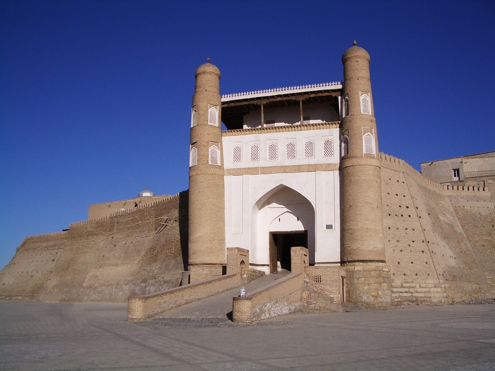
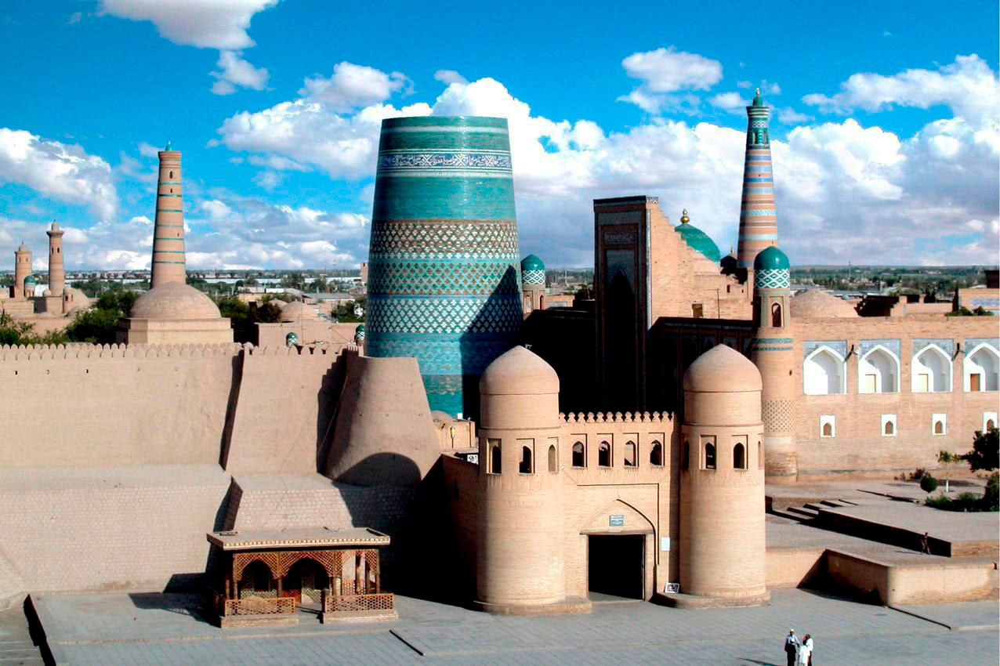

sara zamonaviy shaharga kiradi u
tarixiy obidalarga boy shaharga kiradi.
lokatsiya shu yerda
eng qadimgi davlatlaridan biri
agar u yerga borsangiz albatta
ziyoratgohlarni ko'rib chiqing
lokatsiya ko,rishingiz mumkin
Home |
About |
|---|
|
|
 |
|---|---|
|
Ma'lumot:Toshkent O'zbekistonda eng sara zamonaviy shaharga kiradi u tarixiy obidalarga boy shaharga kiradi. lokatsiya shu yerda |
Ma'lumot: Buxoro o'zbekistonning eng qadimgi davlatlaridan biri agar u yerga borsangiz albatta ziyoratgohlarni ko'rib chiqing lokatsiya ko,rishingiz mumkin |
|
Andijon ajoyib shahar qiziqarli narsalarga boy shahar siz istagan o'zbek ashyosini bu yerdan topishingiz mumkin lokatsiya bu yerda |
Farg'ona menga yoqdigan shahar sayohatga ajoyib shahar siz uchun lokatsiyasi borib ko'ravering |
|
Jizzaxqanday ajoyib shahar siz bunday ajoyib yerda tog'da mazza qilibv nafas olishingiz mumkin lokatsiyasi siz uchun |
Namangan qanday ajoyib joy borsangiz juda ham ajoyib bo'ladi siz ziyoratgohlarni ham ko'rishingiz mumkin mana lokatsiyasi siz uchun tayyor turibdi |

|

|
|---|---|
|
Navoiy qadimiy shahar juda ko'p tarixiy obidalari saqlanib qolgan shahar ziyoratgohlarga boy shahar lokatsiya ochib ko'rishingiz mumkin |
Qashqadaryo juda ham ajoyib, tarixiy shahar bir do'stim qashqadaryolik uning ismi Abdulhamid u juda kuchli bilimga ega Qashqadaryo lokatsiyasi |
|
Samarqand mening ona Vatanim uyer tarixiy obidalarga boy shahar lokatsiyasi |
Sirdaryo juda ham katta daryoga ega joy u yerning pishirilgan baliqlari juda ham ajoyib yesangiz mazza qilasiz lokatsiya |
|  | |
|---|---|
|
Surxandaryo ajoyib shahar juda go'zal agar ziyorat qilsangiz juda ajoyib lokatsiyasi sizga yoqishi aniq |
xorazm qanday ajoyib go'zal chiroyli tarixiy shahar borsangiz xafa bo'lmaysiz juda ajoyib lokatsiya sizga yoqadi |